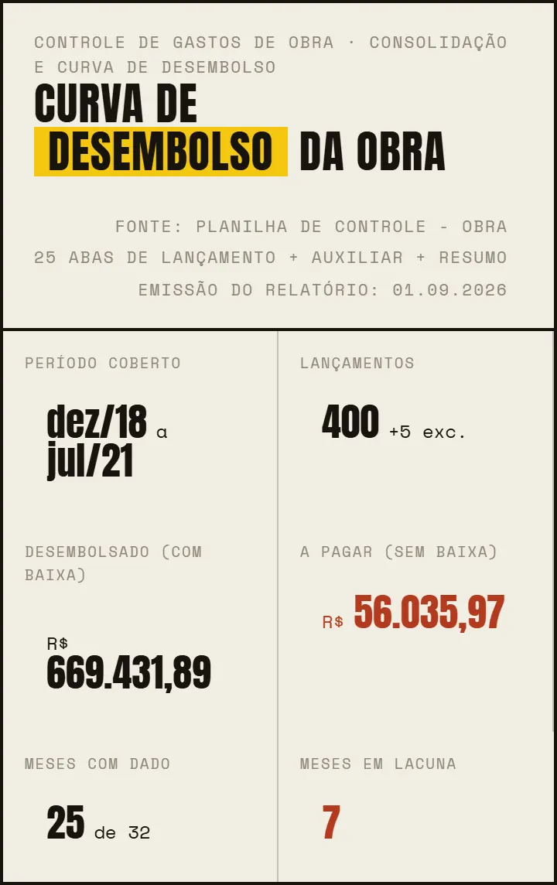
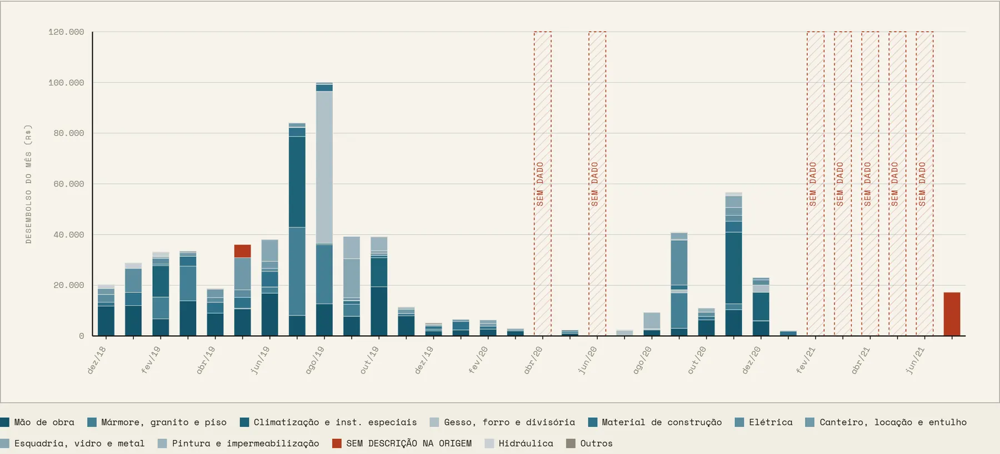

Passo 04 de 04 · Curva de desembolso de obra
Curva de desembolso por categoria em 3D, que abre em qualquer navegador
Ele lê os custos que você vai registrando na obra, consolida mês a mês sem completar o que falta e devolve um HTML com os indicadores, torres 3D que sobem mês a mês, um prédio de valor que explode por família, barras mensais, curva acumulada e a conferência contra a sua planilha.
CONTEXTO Sou [[engenheiro de planejamento]] e quero um relatório HTML interativo de curva de desembolso de obra: rigoroso nos números e com peças 3D animadas que chamem atenção. Tipo de obra: [[reforma de apartamento residencial, 32 meses]]. Não cite cidade nem país. MINHA SITUAÇÃO DE ENTRADA (marque uma) [ ] A · Já tenho a planilha de controle no formato descrito na Etapa 0 → pule para a Etapa 1. [ ] B · Tenho dados, mas fora do formato. Ex.: [[extrato bancário em PDF, fotos de notas fiscais, planilha única sem padrão, anotações no caderno]] → anexei; converta. [x] C · Ainda não tenho dados → gere o template e preencha com dados mock realistas. ETAPA 0 · PREPARAR OS INPUTS 1. Gere um template .xlsx de controle de gastos com esta estrutura: - Uma aba por ciclo mensal, nomeada [[03.12.2018 a 02.01.2019]] (ciclo do dia 03 ao 02) - Colunas: ITEM | FORNECEDOR | SERVIÇOS | NF | EMISSÃO | VALOR | BAIXA - BAIXA = "OK" quando pago; vazio quando a pagar - Linha TOTAL GERAL ao pé de cada aba, com fórmula SOMA - Aba AUXILIAR com a lista de famílias de gasto e um exemplo de SERVIÇOS para cada uma - Aba Resumo com o total por mês - Aba LEIA-ME explicando como preencher 2. Situação B: converta meus dados para esse template. Não invente nada. O que não puder ser lido ou classificado fica em branco e entra numa lista de pendências (arquivo, página, motivo). Me mostre essa lista antes de seguir. 3. Situação C: preencha com dados MOCK, coerentes com [[uma reforma de ~R$ 650 mil em 32 meses, ~400 lançamentos]]: curva em S, pico de gastos no meio da obra, mão de obra como a maior família e fornecedores fictícios. Inclua de propósito os defeitos que o relatório precisa saber tratar, para que todas as seções tenham o que mostrar: - 2 meses isolados e 1 sequência de 5 meses sem aba (lacunas) - ~12 lançamentos com SERVIÇOS vazio - 2 valores gravados como texto ("117,3") - 1 aba com a SOMA do TOTAL GERAL pulando as 2 primeiras linhas - 1 lançamento duplicado (mesma NF, mesmo valor) - ~R$ 50 mil sem baixa Liste esses defeitos plantados num arquivo à parte (gabarito), para eu conferir depois se a Etapa 1 encontrou todos. 4. Me entregue o .xlsx (e o gabarito, se for mock) e espere meu OK. Se os dados forem mock, o relatório final leva a tarja "DADOS FICTÍCIOS" no cabeçalho e no rodapé. ETAPA 1 · CONSOLIDAÇÃO (sem visual ainda) Consolide todas as abas com estas regras: - Competência = mês de abertura do ciclo. - Realizado = só BAIXA = OK; o resto é "a pagar". - Mês sem aba ou sem lançamento é LACUNA, nunca zero. - Agrupe SERVIÇOS nas famílias da aba AUXILIAR. Sem descrição não é inferido pelo fornecedor: vai para "Sem descrição na origem", marcado como alerta. - Converta valores em texto e registre a linha de cada um. - Confira contra o TOTAL GERAL de cada aba e contra a aba Resumo, sem ajustar nada. Para cada divergência, dê a causa com aba e linha. - Nada estimado, interpolado ou completado. Entregue: totais, meses com dado e em lacuna, totais por família e divergências com causa. Se for mock, compare com o gabarito e diga o que foi e o que não foi encontrado. Espere meu OK. ETAPA 2 · RELATÓRIO HTML Um único HTML autocontido, com dados embutidos e bibliotecas só via cdnjs (three.js r128 para o 3D). - Cabeçalho com KPIs: período, nº de lançamentos, desembolsado, a pagar e meses em lacuna (os dois últimos em cor de alerta). - Suposições e lacunas: cada regra adotada e o impacto se ela estiver errada. - 0 · Curva em volume (3D): uma torre por mês, todas com a mesma planta, numa escala vertical única. A base clara é o acumulado anterior; o topo é o mês, em blocos coloridos por família. Os topos formam a curva acumulada. Lacunas viram gaiola tracejada em alerta com rótulo "SEM DADO · N MESES". Animação ao entrar na tela: torres sobem mês a mês, blocos caem e encaixam, e o contador sobe até o total. Depois, câmera ortográfica oscilando devagar. Interação: arrastar para girar, hover com tooltip (mês · família · valor · % do mês), botões RECONSTRUIR e PARAR/GIRAR. - 1 · Curva acumulada 2D: lacunas hachuradas, traço pontilhado onde a curva não avança, tooltip por mês. - 2 · Barras mensais empilhadas por família: lacunas hachuradas, nunca zeradas. - 3 · Prédio de valor (axonometria SVG): camadas por família na ordem construtiva, mão de obra como plataforma abaixo da cota zero, Canteiro/Outros/Sem descrição fora do prédio. Planta FIXA (só a altura codifica valor), com régua e texto explicando por quê. Ao entrar na tela, as camadas sobem uma a uma e o prédio começa a girar. Interação: arrastar para girar, clique para isolar uma camada com os maiores lançamentos (aba e linha de origem), vistas iso/frontal/superior, botão explodir e vista fixa para impressão. - 4 · Ranking de famílias, com % do desembolsado. - 5 · Conferência: totais contra as bases do arquivo, cards das abas divergentes com a causa, e tabela aba a aba. - Gráficos 2D se revelam da esquerda para a direita ao entrar na tela. Layout responsivo. IDENTIDADE VISUAL (preencha ou apague este bloco para deixar a seu critério) - Paleta: [[fundo #F5F3EE · texto #1A1A1A · destaque #E8B400 · dado técnico #1F5C73 · alerta #B5371F · secundário #8A857A]] - Tipografia: [[títulos: Anton · corpo: Montserrat · números/metadados: Space Mono]] - Regras: [[sem sombras, sem cantos arredondados, sem emoji; cor de alerta só para erro/lacuna]] - Rodapé: [[NOME DO PROJETO · REV. 00 · DATA · FOLHA 1/1]] - Alternativa: [[use as cores e fontes do site https://exemplo.com.br]] VALIDAÇÃO ANTES DE ENTREGAR - Os dados embutidos no HTML somam o mesmo total da Etapa 1. - Screenshots da animação no meio e no fim, e do prédio girando, sem sobreposições. - Nenhum valor estimado; toda divergência citada com aba e linha.
O que ele resolve
Com a obra rodando, o custo mora numa planilha com uma aba por mês, nota sem descrição, valor digitado como texto e mês que ninguém lançou. Na hora de mostrar pro cliente, vira um gráfico de Excel que esconde tudo isso, e ele tem que confiar no número sem ver de onde saiu.
Esse prompt consolida e confere antes de desenhar: só entra o que tem baixa, e cada divergência com o total da aba sai com aba e linha. Mês sem lançamento é lacuna, nunca zero: vira gaiola tracejada SEM DADO nas torres e coluna hachurada nas barras. E nota sem descrição não ganha família pelo nome do fornecedor, porque ele recusa estimar, interpolar ou completar.
O que ele devolve




Role a tabela para o lado →
| Família de gasto | Desembolsado (R$) | % do total | Observação |
|---|---|---|---|
| Mão de obra | 175.093,50 | 26,16% | — |
| Mármore, granito e piso | 105.038,57 | 15,69% | — |
| Climatização e inst. especiais | 99.608,79 | 14,88% | — |
| Gesso, forro e divisória | 66.125,00 | 9,88% | — |
| Material de construção | 51.623,43 | 7,71% | — |
| Elétrica | 45.882,66 | 6,85% | — |
| Sem descrição na origem | 22.440,00 | 3,35% | Pendência Coluna SERVIÇOS vazia na planilha; a família não foi deduzida pelo fornecedor |
| Total desembolsado (com baixa) | 669.431,89 | 100,00% | Inclui as 5 famílias menores fora desta lista (canteiro, locação e entulho; esquadria, vidro e metal; pintura e impermeabilização; hidráulica; outros): R$ 103.619,94, 15,48%. R$ 56.035,97 ainda a pagar ficam fora da curva |
Saída de exemplo · Relatório de curva de desembolso aberto no navegador
Macete(ando o apocalipse)
- Esse processo tende a ser mais preciso depois que você configurar as skills e agentes. Te explico como fazer essas coisas na nossa newsletter, o Campo Minado. Só clicar aqui.
- O engenheiro da nova geração é, acima de tudo, responsável. Lembre-se que IA pode cometer erros. Use ela como um facilitador, não como verdade definitiva. O prompt organiza e explicita o cálculo — quem responde pelo número continua sendo você.
- Curva de desembolso aqui é dinheiro que saiu: só entra lançamento com BAIXA = OK. Os R$ 56.035,97 a pagar que aparecem nos indicadores ficam fora das torres e do acumulado. Se o cliente perguntar quanto a obra já custou, a resposta é pago e a pagar; não apresenta a torre mais alta sozinha como se fosse o custo da obra.
- Mês em lacuna não é mês barato. Aqui são 7 meses SEM DADO: abr/20, jun/20 e de fev/21 a jun/21 em sequência. Antes da reunião, acha as notas desses meses ou escreve por que não existem. Gaiola tracejada no meio da curva chama mais atenção do cliente que qualquer torre, então chega com a resposta pronta.
- Sem descrição na origem não é família de obra: são R$ 22.440,00, 3,35% do desembolsado, que ninguém disse o que eram. Por isso ficam em tijolo nas barras e fora do volume do prédio. Ele não deduz a família pelo fornecedor, porque o prompt proíbe: preenche a coluna SERVIÇOS na planilha e roda de novo, em vez de jogar tudo em Outros no olho.
- Situação C é pra testar: os números são mock e o relatório tem que sair com a tarja DADOS FICTÍCIOS no cabeçalho e no rodapé. Confere a Etapa 1 contra o gabarito de defeitos plantados; se ele não achou algum, o relatório com os seus dados também não vai achar. Na situação B, ele tem que parar e te mostrar a lista de pendências da conversão antes de seguir: se pulou essa parada, volta.
- As capturas aqui em cima são um pedaço do relatório. O mesmo HTML traz a curva acumulada 2D, a conferência contra a planilha, a tabela das lacunas e as Suposições com o impacto de cada regra, e clicar numa camada do prédio mostra os maiores lançamentos com aba e linha. O 3D carrega o three.js pela internet: abre no computador e na rede da reunião antes de mostrar pro cliente. E começa pela Conferência: se o total não bate com a planilha, torre girando é enfeite.
Do escopo ao custo, na ordem da obra
Esse é só um dos prompts que uso no meu dia a dia pra ganhar mais tempo livre.
Posto isso e muito mais no Instagram.